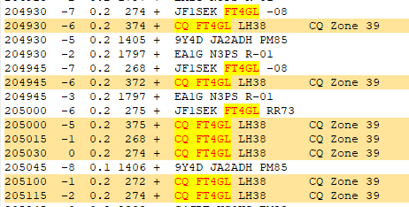

[
Date Prev
][
Date Next
][
Thread Prev
][
Thread Next
][
Date Index
][
Thread Index
]
[NCDXC Chat] FT4GL done now?
To
: Spot <
chat@ncdxc.org
>, Spot <
wvdxc@groups.io
>
Subject
: [NCDXC Chat] FT4GL done now?
From
: Al N6TA <
al.n6ta@gmail.com
>
Date
: Mon, 17 Jun 2024 14:03:25 -0700
Dkim-signature
: v=1; a=rsa-sha256; c=relaxed/relaxed; d=gmail.com; s=20230601; t=1718658218; x=1719263018; darn=ncdxc.org; h=to:subject:message-id:date:from:mime-version:from:to:cc:subject :date:message-id:reply-to; bh=2S9g6pVcAPl8uAyo/YFtamawhE73PjT4R8xqELZX+js=; b=GfTVErYAd9x+wQcVcuq2pUuXuO7JD15stqRYxuWRZW0jDDE5iSDNuH+8+wMnLXNBW6 yoyvzWgPG6XCTAIFanPrNLd3XKruJXmSrCCyo4Cm2j+QOf3ylLqJaKXLakOcgr8kCoWS HhncsZbgnfc933kFItqsIgTn0KDUq78qz/1ccG2V9BxVbEqGdhiYWANa+HLIsX4aV4CB u5ooRbfIjAFNXYDqlpINLWLv3LSbjeTfLUk4QCOV/r4IRuNx/I1VsNBaO5VA5RP7FCqO R0iX+txrNm3iwZn2Is0pQFBdnq8KWHID0R6vIbLaGTbtZ4IusYZ5CT0zbvKQa+ula2eb qWUg==
List-archive
: <
http://mail.ncdxc.org/mailman/private/chat_ncdxc.org/
>
List-help
: <
mailto:chat-request@ncdxc.org?subject=help
>
List-id
: NCDXC Discussion List <chat.ncdxc.org>
List-post
: <
mailto:chat@ncdxc.org
>
List-subscribe
: <
http://mail.ncdxc.org/mailman/listinfo/chat_ncdxc.org
>, <
mailto:chat-request@ncdxc.org?subject=subscribe
>
List-unsubscribe
: <
http://mail.ncdxc.org/mailman/options/chat_ncdxc.org
>, <
mailto:chat-request@ncdxc.org?subject=unsubscribe
>
He seems to have quit 17 M FT4. My last decodes suggested it would be possible to make a contact. I had been calling to no avail for this band.
Al

Follow-Ups
:
Re: [NCDXC Chat] FT4GL done now?
From:
<ww6g@comcast.net>
Prev by Date:
[NCDXC Chat] FT4GL, 18108 kHz, 2020Z
Next by Date:
Re: [NCDXC Chat] FT4GL done now?
Previous by thread:
Re: [NCDXC Chat] [wvdxc] FT4GL, 18108 kHz, 2020Z
Next by thread:
Re: [NCDXC Chat] FT4GL done now?
Index(es):
Date
Thread